In this example we study the compression of a 2D circular disk, loaded by an external pressure. We also demonstrate:
- how to "upgrade" a
Meshto aSolidMesh - why it is necessary to use "undeformed MacroElements" to ensure that the numerical results converge to the correct solution under mesh refinement if the domain has curvilinear boundaries.
- how to switch between different constitutive equations
- how to incorporate isotropic growth into the model
We validate the numerical results by comparing them against the analytical solution of the equations of linear elasticity which are valid for small deflections.
The problem
The figure below shows a sketch of the basic problem: A 2D circular disk of radius  is loaded by a uniform pressure
is loaded by a uniform pressure  . We wish to compute the disk's deformation for a variety of constitutive equations.
. We wish to compute the disk's deformation for a variety of constitutive equations.

The next sketch shows a variant of the problem: We assume that the material undergoes isotropic growth (e.g. via a biological growth process or thermal expansion, say) with a constant growth factor  . We refer to the the document "Solid mechanics: Theory and implementation" for a detailed discussion of the theory of isotropic growth. Briefly, the growth factor defines the relative increase in the volume of an infinitesimal material element, relative to its volume in the stress-free reference configuration. If the growth factor is spatially uniform, isotropic growth leads to a uniform expansion of the material. For a circular disk, uniform growth increases the disk's radius from 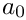 to 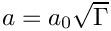 without inducing any internal stresses. This uniformly expanded disk may then be regarded as the stress-free reference configuration upon which the external pressure acts.
. We refer to the the document "Solid mechanics: Theory and implementation" for a detailed discussion of the theory of isotropic growth. Briefly, the growth factor defines the relative increase in the volume of an infinitesimal material element, relative to its volume in the stress-free reference configuration. If the growth factor is spatially uniform, isotropic growth leads to a uniform expansion of the material. For a circular disk, uniform growth increases the disk's radius from 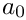 to 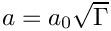 without inducing any internal stresses. This uniformly expanded disk may then be regarded as the stress-free reference configuration upon which the external pressure acts.

Results
The animation shows the disk's deformation when subjected to uniform growth of 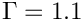 and loaded by a pressure that ranges from negative to positive values. All lengths were scaled on the disks initial radius (i.e. its radius in the absence of growth and without any external load).
The figure below illustrates the disk's load-displacement characteristics by plotting the disk's non-dimensional radius as function of the non-dimensional pressure, 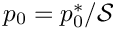 , where  is the characteristic stiffness of the material, for a variety of constitutive equations.
is the characteristic stiffness of the material, for a variety of constitutive equations.

Generalised Hooke's law
The blue, dash-dotted line corresponds to oomph-lib's generalisation of Hooke's law (with Young's modulus  and Poisson ratio
and Poisson ratio  ) in which the dimensionless second Piola Kirchhoff stress tensor (non-dimensionalised with the material's Young's modulus , so that 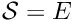 ) is given by
) in which the dimensionless second Piola Kirchhoff stress tensor (non-dimensionalised with the material's Young's modulus , so that 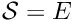 ) is given by
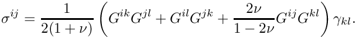
Here 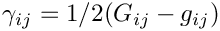 is Green's strain tensor, formed from the difference between the deformed and undeformed metric tensors, 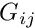 and  , respectively. The three different markers identify the results obtained with the two forms of the principle of virtual displacement, employing the displacement formulation (squares), and a pressure/displacement formulation with a continuous (delta) and a discontinuous (nabla) pressure interpolation.
, respectively. The three different markers identify the results obtained with the two forms of the principle of virtual displacement, employing the displacement formulation (squares), and a pressure/displacement formulation with a continuous (delta) and a discontinuous (nabla) pressure interpolation.
For zero pressure the disk's non-dimensional radius is equal to the uniformly grown radius 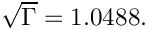 For small pressures the load-displacement curve follows the linear approximation
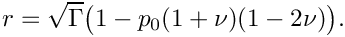
We note that the generalised Hooke's law leads to strain softening behaviour under compression (the pressure required to reduce the disk's radius to a given value increases more rapidly than predicted by the linear approximation) whereas under expansion (for negative external pressures) the behaviour is strain softening.
Generalised Mooney-Rivlin law
The red, dashed line illustrates the behaviour when Fung & Tong's generalisation of the Mooney-Rivlin law (with Young's modulus, , Poisson ratio and Mooney-Rivlin parameter 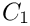) is used as the constitutive equation. For this constitutive law, the non-dimensional strain energy function 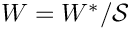, where the characteristic stress is given by Young's modulus, i.e. 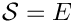, is given by
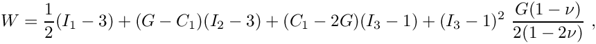
where
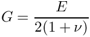
is the shear modulus, and 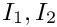 and 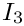 are the three invariants of Green's strain tensor. See "Solid mechanics: Theory and implementation" for a detailed discussion of strain energy functions. The figure shows that for small deflections, the disk's behaviour is again well approximated by linear elasticity. However, in the large-displacement regime the Mooney-Rivlin is strain hardening under extension and softening under compression when compared to the linear elastic behaviour.
Global parameters and functions
As usual we define the global problem parameters in a namespace. We provide pointers to the constitutive equations and strain energy functions to be explored, and define the associated constitutive parameters.
Next we define the pressure load, using the general interface defined in the SolidTractionElement class. The arguments of the function reflect that the load on a solid may be a function of the Lagrangian and Eulerian coordinates, and the external unit normal on the solid. Here we apply a spatially constant external pressure of magnitude P which acts in the direction of the negative outer unit normal on the solid.
Finally, we define the growth function and impose a spatially uniform expansion that (in the absence of any external load) would increase the disk's volume by 10%.
The driver code
The driver code is very short: We store the command line arguments (as usual, we use a non-zero number of command line arguments as an indication that the code is run in self-test mode and reduce the number of steps performed in the parameter study) and create a strain-energy-based constitutive equation: Fung & Tong's generalisation of the Mooney-Rivlin law.
We build a problem object, using the displacement-based RefineableQPVDElements to discretise the domain, and perform a parameter study, exploring the disk's deformation for a range of external pressures.
We repeat the exercise with elements from the RefineableQPVDElementWithContinuousPressure family which discretise the principle of virtual displacements (PVD) in the pressure/displacement formulation, using continuous pressures (Q2Q1; Taylor Hood).
The next computation employs RefineableQPVDElementWithPressure elements in which the pressure is interpolated by piecewise linear but globally discontinuous basis functions (Q2Q-1; Crouzeiux-Raviart).
Next, we change the constitutive equation to oomph-lib's generalised Hooke's law,
before repeating the parameter studies with the same three element types:
The mesh
We formulate the problem in cartesian coordinates (ignoring the problem's axisymmetry) but discretise only one quarter of the domain, applying appropriate symmetry conditions along the x and y axes. The computational domain may be discretised with the RefineableQuarterCircleSectorMesh that we already used in many previous examples. To use the mesh in this solid mechanics problem we must first "upgrade" it to a SolidMesh. This is easily done by multiple inheritance:
The constructor calls the constructor of the underlying RefineableQuarterCircleSectorMesh and sets the Lagrangian coordinates of the nodes to their current Eulerian positions, making the initial configuration stress-free.
We also provide a helper function that creates a mesh of SolidTractionElements which are attached to the curved domain boundary (boundary 1). These elements will be used to apply the external pressure load.
The Problem class
The definition of the Problem class is very straightforward. In addition to the constructor and the (empty) actions_before_newton_solve() and actions_after_newton_solve() functions, we provide the function parameter_study(...) which performs a parameter study, computing the disk's deformation for a range of external pressures. The member data includes pointers to the mesh of "bulk" solid elements, and the mesh of SolidTractionElements that apply the pressure load. The trace file is used to document the disk's load-displacement characteristics by plotting the radial displacement of the nodes on the curvilinear boundary, pointers to which are stored in the vector Trace_node_pt.
The Constructor
We start by constructing the mesh of "bulk" SolidElements, using the Ellipse object to specify the shape of the curvilinear domain boundary.
Next we choose the nodes on the curvilinear domain boundary (boundary 1) as the nodes whose displacement we document in the trace file.
The QuarterCircleSectorMesh that forms the basis of the "bulk" mesh contains only three elements – not enough to expect the solution to be accurate. Therefore we apply one round of uniform mesh refinement before attaching the SolidTractionElements to the mesh boundary 1, using the function make_traction_element_mesh() in the ElasticRefineableQuarterCircleSectorMesh.
We add both meshes to the Problem and build a combined global mesh:
Symmetry boundary conditions along the horizontal and vertical symmetry lines require that the nodes' vertical position is pinned along boundary 0, while their horizontal position is pinned along boundary 2.
Since we are using refineable solid elements, we pin any "redundant" pressure degrees of freedom in the "bulk" solid mesh (see the exercises in another tutorial for a more detailed discussion of this issue).
Next, we complete the build of the elements in the "bulk" solid mesh by passing the pointer to the constitutive equation and the pointer to the isotropic-growth function to the elements:
We repeat this exercise for the SolidTractionElements which must be given a pointer to the function that applies the pressure load
Finally, we set up the equation numbering scheme and report the number of unknowns.
Post-processing
The post-processing function outputs the shape of the deformed disk. We use the trace file to record how the disk's volume (area) and the radii of the control nodes on the curvilinear domain boundary vary with the applied pressure. To facilitate the validation of the results against the analytical solution, we also add the radius predicted by the linear theory to the trace file.
Performing the parameter study
The function parameter_study(...) computes the disk's deformation for a range of external pressures and outputs the results. The output directory is labelled by the unsigned function argument. This ensures that parameter studies performed with different constitutive equations are written into different directories.
Comments and Exercises
The use of MacroElements in solid mechanics problems
Recall how oomph-lib employs MacroElements to represent the exact domain shapes in adaptive computations involving problems with curvilinear boundaries. When an element is refined, the (Eulerian) position of any newly-created nodes is based on the element's MacroElement counterpart, rather than being determined by finite-element interpolation from the "father element". This ensures that (i) newly-created nodes on curvilinear domain boundaries are placed exactly onto those boundaries and (ii) that newly-created nodes in the interior are placed at positions that match smoothly onto the boundary.
This strategy is adapted slightly for solid mechanics problems:
- The Eulerian position of newly-created
SolidNodesis determined by finite element interpolation from the "father element", unless the newly-createdSolidNodeis located on a domain boundary and its position is pinned by displacement boundary conditions.
- The same procedure is employed to determine the Lagrangian coordinates of newly-created
SolidNodes.
These modifications ensure that, as before, newly-created nodes on curvilinear domain boundaries are placed exactly onto those boundaries if their positions are pinned by displacement boundary conditions. (If the nodal positions are not pinned, the node's Eulerian position will be determined as part of the solution.) The use of finite-element interpolation from the "father element" in the interior of the domain for both Lagrangian and Eulerian coordinates ensures that the creation of new nodes does not induce any stresses into a previously computed solution.
Exercises
- Our discretisation of the problem in cartesian coordinates did not exploit the problem's axisymmetry. Examine the trace file to assess to which extent the computation retained the axisymmetry.
PDF file
A pdf version of this document is available.